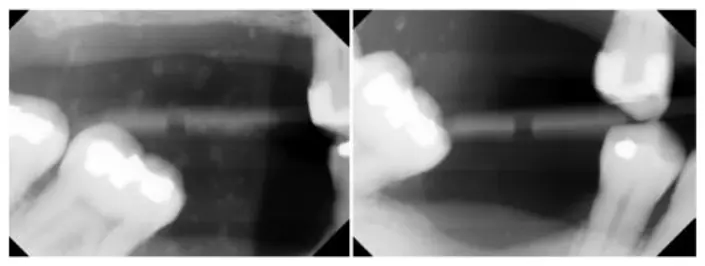
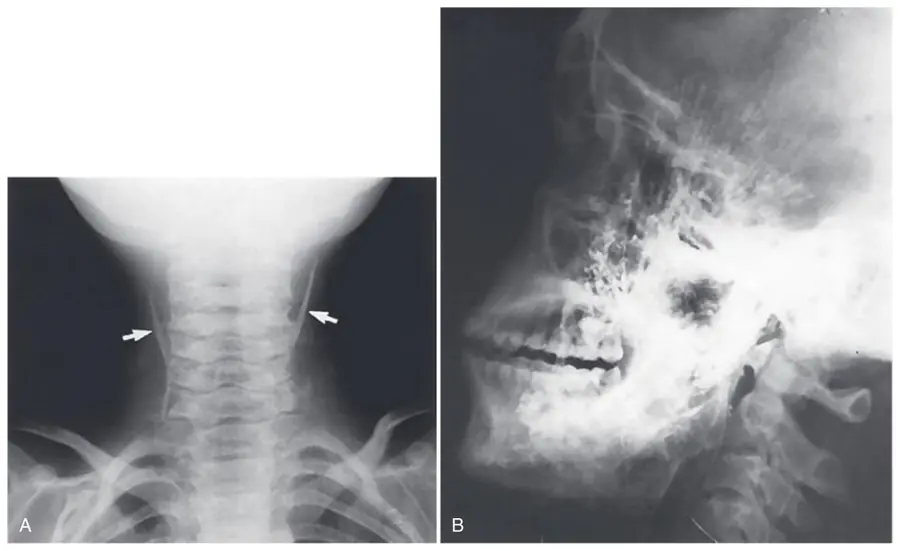

نسخه استخراجشده؛ ترجمه یا تأیید علمی انجام نشده است. وضعیت: captured
استئوما کوتیس، استخوانی است در جایی که نباید باشد: «استخوانسازی نادر بافت نرم در پوست یا بافت زیرجلدی که به شکل تشکیل کانونی استخوان درون درم، فیزیکاً جدا از هر بافت استخوانی اولیه، بروز میکند.»

و دو شکل دارد، با یک عدد کلیدی: «اولیه، که در بافت طبیعی و بدون هیچ وضعیت پیشزمینهای رخ میدهد؛ یا ثانویه، که در پوست آسیبدیده یا مختلشده پدید میآید. تقریباً ۸۵٪ موارد ثانویهاند و در آکنهی اسکاردار درازمدت رخ میدهند و متاپلازی استئوبلاستیک را برمیانگیزند.»
و محلهایش: «هر جایی میتواند رخ دهد، ولی صورت شایعترین محل است.» و «زبان شایعترین محل داخلدهانی است — استئوما موکوزه یا کوریستومای استخوانی». روی تصویر، «بیشتر در نواحی گونه و لب ظاهر میشود». از نظر بالینی، پوست روی آن تغییری نمیکند جز گاهی رنگی زردمایل به سفید؛ سوزنی که در یکی از پاپولها فرو برود با مقاومتی سنگمانند روبهرو میشود، استئومای منفرد بزرگ را میتوان لمس کرد، و برخی بیماران دهها تا صدها ضایعه دارند (شکل میلیاری متعدد: در زنان معمولاً روی صورت، در مردان روی پوست سر یا قفسهی سینه).
و مهمترین اشتباه تشخیصیاش: «در این محل، ناحیهی استخوانیشده میتواند روی ریشهی دندان یا زائدهی آلوئولار سوپرایمپوز شود و ظاهر ناحیهای از استخوان متراکم بسازد.»
و دو ترفند مکانیابی که این مشکل را حل میکنند:
و امضای تصویریاش: «موجودیتهای رادیواوپک واشرشکل با محیطهای صاف.» و از نظر اندازه: «معمولاً بسیار کوچک، هرچند اندازه میتواند از ۰٫۱ تا ۵ سانتیمتر باشد.»
و ساختار داخلیاش، نامش را میسازد: «میتواند همگن رادیواوپک باشد، ولی معمولاً یک مرکز رادیولوسنت که نمایندهی مغز چربی طبیعی است دیده میشود، که به ضایعه ظاهر دوناتمانند رادیوگرافیک میدهد.» و در استئوماهای بزرگتر، گاهی ترابکول در حفرهی مغز پدید میآید.
و یک ظاهر دیگر: «ضایعات منفرد آکنهی کیستیک کلسیفیه شبیه یک رادیواوپسیتهی دانهبرفیشکلاند، که با محل بالینی اسکار مطابقت دارد.»
و افتراقش: «تشخیص افتراقی باید شامل میوزیت اُسیفیکانس، کلسینوزیس کوتیس، و استئوما موکوزه باشد. فیلرهای درمال و حجمدهندههای زیرجلدی میتوانند همان تظاهرات رادیوگرافیک را داشته باشند.» و دو کلید تفکیک: «اگر تکنیک گونهی باددادشده به کار رود، ضایعات استئوما کوتیس بسیار سطحیتر از ضایعات مخاطی دیده میشوند»، و «میوزیت اُسیفیکانس ابعاد بزرگتری دارد و در برخی موارد بدشکلی محسوس کانتور صورت میسازد».
و مدیریت: «مدیریتی لازم نیست، ولی استئوما کوتیس اولیه گاهی به دلایل زیبایی برداشته میشود.» روشها: لیزر ریسرفیسینگ با کرم رتینوئیک اسید، کورتاژ، و تازهتر، تکنیک میکرواینسیزیون-استخراج سوزنی در بیماران با استئوما کوتیس میلیاری متعدد.
و حالا سیستیسرکوز — کلسیفیکاسیونی که یک بیماری جهانی را فاش میکند: «از راه مدفوعی-دهانی کسب میشود، یا با خوردن سبزیجات آلوده به مدفوع یا مصرف گوشت خوک آلوده.» وقتی انسان ناآگاهانه تخم یا پروگلوتید بارور انگل تنیا سولیوم (کرم نواری خوک) را ببلعد، «پوشش تخم در معده هضم میشود و شکل لاروی — سیستیسرکوس سلولوزه — سر میزند».
و مسیر انتشارش: «لاروها از مخاط عبور میکنند، وارد رگهای خونی و لنفاوی میشوند، و بهعنوان سیستیسرکی در بافتهای سراسر بدن توزیع میشوند — بهویژه در مغز، عضله، پوست، کبد، ریه، بافتهای زیرجلدی، و قلب.» و «میتوانند در بافتهای دهانی و پیرادهانی هم یافت شوند، بهویژه عضلات جونده».
و چرا کلسیفیه میشوند — با یک نکتهی زمانی مهم: «هرچند دیوارهی کیست غنی از گلیکوپروتئین ضخامتی بیش از ۱۰۰ میکرومتر دارد، وقتی سالم است بهندرت پاسخ میزبان برمیانگیزد. ولی در بافتهای غیر از مخاط روده، لاروها سرانجام سالها پس از عفونت میمیرند و مانند اجسام خارجی با آنها رفتار میشود، که واکنش التهابی قوی، تشکیل گرانولوم، اسکار و کلسیفیکاسیون برمیانگیزد.»
و پیامد تصویری این نکته: «تا زمانی که زندهاند، لاروها روی تصویر دیده نمیشوند. مرگ انگل و پیدایش کلسیفیکاسیون در محلهای زیرجلدی و عضلانی، سالها پس از عفونت اولیه رخ میدهد.» و برای تأیید لاروهای زنده، «سونوگرافی و MRI روشهای استاندارد طلاییاند، با یافتههایی که با آسپیراسیون سوزنی ظریف تقویت میشوند».
و امضای تصویریاش: «موجودیتهای بیضوی خوشمرز متعدد که شبیه دانههای برنجاند»، با ساختار داخلی همگن و رادیواوپک. و محلهای دهانیشان: عضلات جونده و عضلات حالتدهندهی صورت، عضلات فوقهیوئید، عضلات پسگردنی، و مخاط دهان.
و افتراقش از سنگ بزاقی: «سیستیسرکوس میتواند شبیه سنگ بزاقی دیده شود. ولی اندازهی کوچک ندولهای کلسیفیهی سیستیسرکی و پراکندگی گستردهشان — بهویژه در مغز و عضلات — بهشدت به این تشخیص اشاره دارند.»
و یک نکتهی مدیریتی که فراتر از خود بیمار میرود: «پس از آنکه لاروها در بافتهای دهانی نشستند و کلسیفیه شدند، بیضررند. ولی مهم است که در هر بیمار بررسی دقیقی انجام شود تا حضور انگل در محلهای دیگر رد شود، و آزمون سرولوژیک روی تماسهای نزدیک برای شناسایی منبع احتمالی عفونت انجام گیرد.»
یک تصور نادرست را از همان اول کنار بگذار: در میوزیت اُسیفیکانس، «بافت فیبروز و استخوان هتروتوپیک درون بافت بینابینی عضله و تاندونها و لیگامانهای همراه تشکیل میشوند» — و صریحتر: «هیچ استخوانی شدن واقعی خودِ الیاف عضلانی رخ نمیدهد.»

و آنچه بر سر عضله میآید: «تخریب و آتروفی ثانویهی عضله رخ میدهد، چون این بافت فیبروز و استخوان میان الیاف عضلانی فرو میروند و آنها را از هم جدا میکنند.» و دو شکل اصلی دارد: موضعی و پیشرونده.
و شکل موضعی (تروماتیک) — و چرا مستقیماً به کار دندانپزشک میآید: «از تروما یا کشش شدید عضلانی ناشی از برخی مشاغل و ورزشها پدید میآید.» و سازوکارش: «عضلهی اسکلتی پس از تروما ظرفیت بازسازی محدودی دارد، و کوفتگی عضله به خونریزی قابل توجه به درون عضله یا تاندونها و فاسیای همراه میانجامد.» و تصور میشود «تکثیر پرشور بافت گرانولاسیون عروقی پس از آن حین ترمیم دچار متاپلازی به غضروف و استخوان میشود».
و علت دندانپزشکیاش: «آسیب عضله از تزریقهای متعدد — گاهی از تزریق بیحسی دندانپزشکی — هم میتواند علت باشد.» و «اتصالات قدامی عضلات تمپورالیس و پتریگوئید داخلی حین تجویز بیحسی بلاک مندیبولار در معرض آسیباند».
و تصویر بالینیاش، با یک نشانهی هشدار: «بیشتر در مردان جوان با فعالیت شدید رخ میدهد. محل ترومای آغازگر برای مدتی بسیار طولانیتر از انتظار متورم، حساس و دردناک میماند.» پوست روی آن میتواند قرمز و ملتهب باشد، و «وقتی استخوانی شدن یک عضلهی جونده را در بر بگیرد، باز کردن فک میتواند دشوار شود». و «پس از حدود ۲ یا ۳ هفته، ناحیهی استخوانی شدن در بافتها آشکار میشود و یک تودهی داخلعضلانی سفت قابل لمس است».
و محلش در سر و گردن: «هرچند این وضعیت بیشتر اندامها را درگیر میکند، شایعترین عضلات درگیر سر و گردن ماستر و استرنوکلایدوماستوئیدند.» و «تودههای استخوانیشده عموماً کمتر از ۶ سانتیمتر در بزرگترین بُعد اندازهگیری میشوند».
و مشهورترین نشانهی تصویری این درس: محیط ضایعه معمولاً رادیواوپکتر از ساختار داخلی است، و «تنوعی در شکل از بیضی نامنظم تا رگههای خطی —سودوترابکول — که در همان جهت الیاف عضلانی طبیعی میدوند. معمولاً یک نوار رادیولوسنت میان ناحیهی استخوانی شدن و استخوان مجاور دیده میشود، و استخوان هتروتوپیک میتواند در امتداد محور بلند عضله قرار گیرد. این سودوترابکولها مشخصهاند، اگر نگوییم پاتوگنومونیک، برای میوزیت اُسیفیکانس.»
و جدول زمانی بلوغ — که خودش یک ابزار تشخیصی است:
و افتراقش از نئوپلاسم استخوانساز: «هرچند تومورهایی مانند استئوسارکوم میتوانند الگوی استخوانی خطی بسازند، تومور با استخوان پیوسته است و نشانههای تخریب استخوان اغلب حاضرند.» — در حالی که میوزیت اُسیفیکانس یک نوار رادیولوسنت جداکننده دارد.
و مدیریتش، با یک هشدار جراحی: در مرحلهی تکامل ضایعه، مهار گیرندهی نوع ۱ پروتئین مورفوژنیک استخوان (BMP) برای کاهش استخوانسازی هتروتوپیک پیشنهاد شده است، چون میکروآسیب و نکروز عضله ماکروفاژهایی را جذب میکند که فاکتورهای رشد استخوانساز میسازند.
و «استراحت و محدود کردن استفاده برای کاهش گسترهی رسوب کلسیفیک توصیه میشود.» و برای ضایعاتی که محدودیت عملکردی یا اختلال عصبی میسازند، «برداشت جراحی کل تودهی کلسیفیه با فیزیوتراپی فشرده». و هشدار: «برداشت ناقص یا برداشت در مرحلهی نابالغ میتواند به عود بینجامد.» — و بلوغ کامل میان ۶ تا ۱۲ ماه رخ میدهد.
و حالا شکل پیشرونده — یک بیماری ژنتیکی نادر: «میوزیت اُسیفیکانس پیشرونده یا فیبرودیسپلازی اُسیفیکانس پروگرسیوا، ناهنجاری ژنتیکی نادری با الگوی انتقال اتوزومال غالب است.» علتش: «یک جهش افزایش عملکرد در گیرندهی نوع ۱ اکتیوین A پروتئین مورفوژنیک استخوان / کیناز شبهاکتیوین ۲.» و «در مردان شایعتر است و از اوایل نوزادی علائم میسازد».
و نشانهی مادرزادیاش: «بیماران بدشکلی مادرزادی شست پا (هالوکس والگوس) نشان میدهند.» و مسیر بیماری: «در بیشتر موارد، استخوانی شدن هتروتوپیک بهطرز فاجعهبار ناتوانکننده در عضلات گردن و بالای پشت آغاز میشود و به اندامها میرود.»
و سرانجامش: «مراحل پیشرفتهی بیماری به وضعیت «مرد سنگشده» میانجامد، با بیحرکتی از راه دگردیسی پیشروندهی عضلهی اسکلتی به یک اسکلت دوم از استخوان هتروتوپیک. بیشتر بیماران در دههی سوم یا چهارم میمیرند، معمولاً بهدلیل نارسایی تنفسی یا عفونت.»
و مهمترین نکتهی عملی برای دندانپزشک: «هیچ درمان مؤثری برای میوزیت اُسیفیکانس پیشرونده وجود ندارد. اقدامات دندانپزشکی غیرترومایی و غیرتهاجمی اندیکاسیون دارند، با پرهیز از بیحسی بلاک عصبی و بهجای آن استفاده از بیحسی انفیلتراسیون موضعی زیرجلدی.»
و یک نکتهی افتراقی زیبا: «در مورد کلسینوزیس، رسوبات املاح کلسیم آمورف اغلب جذب میشوند، ولی در میوزیت اُسیفیکانس پیشرونده، استخوان هرگز ناپدید نمیشود.»